State Parks
Antelope Island
Visit this largest island in Great Salt Lake, which offers camping, wildlife viewing, hiking, horseback riding, and mountain biking. Antelope Island is home to free-roaming herds of bison, bighorn sheep, mule deer, and pronghorn antelope. The island provides spectacular views of Great Salt Lake, the Wasatch Mountains, Salt Lake skyline, and benches of ancient Lake Bonneville


Bear Lake
Brilliantly blue waters combined with sandy beaches are what call park visitors to play, fish, boat, and camp here at Bear Lake State Park. Minerals (calcium carbonate) suspended in the lake’s waters are what help create its spectacular aqua-blue color.
Located in the beautiful Bear Lake Valley in Rich County, there are three distinct recreation areas: Marina, Rendezvous Beach, and the Eastside, which offer a variety of recreational opportunities. Whether you plan on spending a day, weekend, or more, Bear Lake offers some of the best picnicking, camping, boating, fishing, or hiking that you will find in the great state of Utah.
 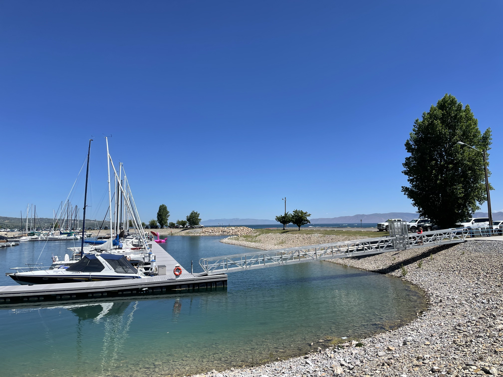
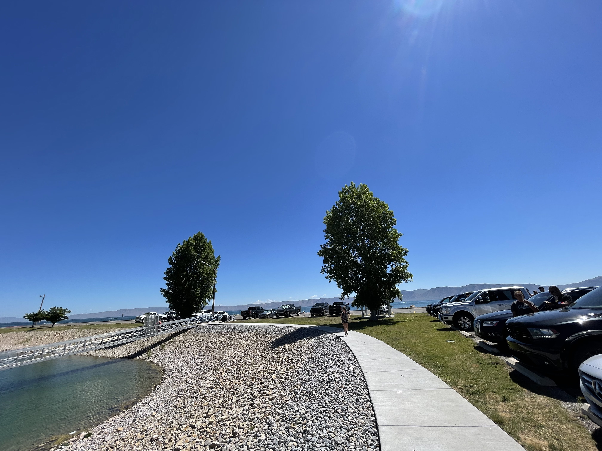
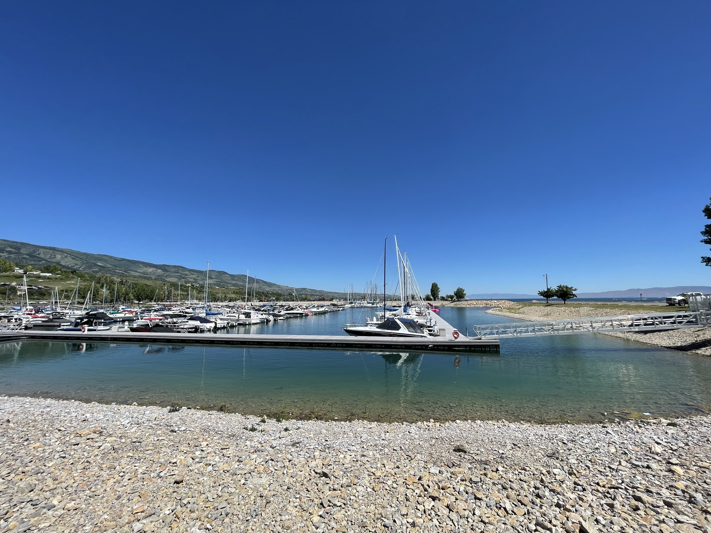
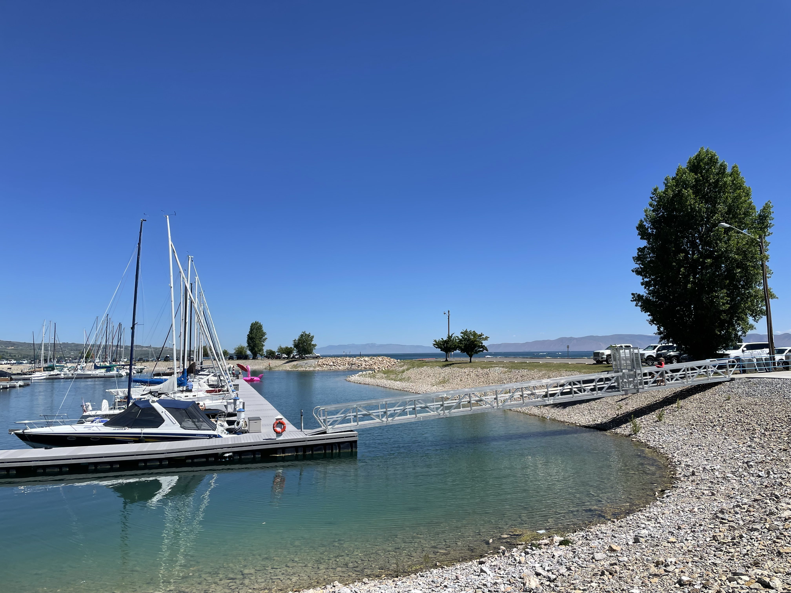
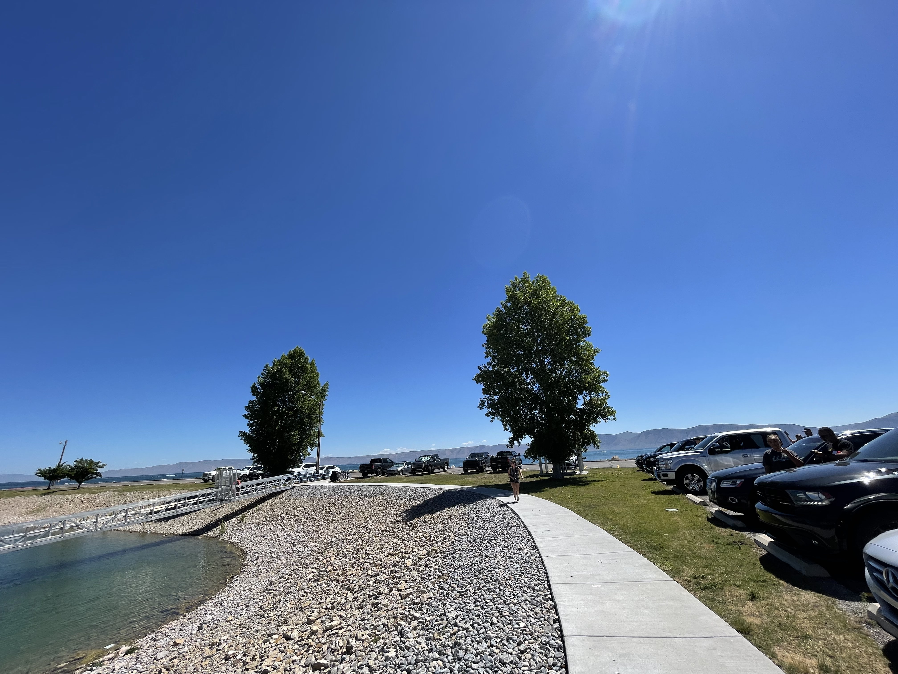
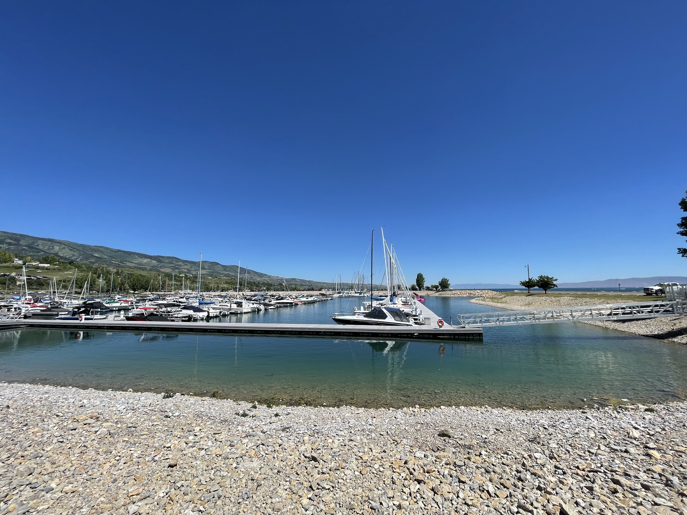


Bonneville State Park
The Bonneville Salt Flats are one of Earth's most unique landforms. The salt flats are about 12 miles long and 5 miles wide and are comprised mostly of sodium chloride, or table salt. Located 120 miles west of Salt Lake City in Tooele County, Utah, the salt flats are a 30,000 acre expanse of hard, white salt crust on the western edge of the Great Salt Lake Basin in Utah. Like the Great Salt Lake, the Salt Flats are a remnant of Lake Bonneville, which covered over one-third of Utah from 10,000 to 32,000 years ago. The salt flats are on the National Register of Historic Places, are designated as an Area of Critical Environmental Concern, and are managed as a Special Recreation Management Area.
The salt flats are generally open to the public for recreational purposes. Motor vehicle use is limited by seasonal closure during the spring when the salt is moist or has standing water on the surface. Closure dates may vary and will be posted by sign. The salt flats are used for land speed racing, archery competitions, running races, photography, videography, and scientific research projects.


 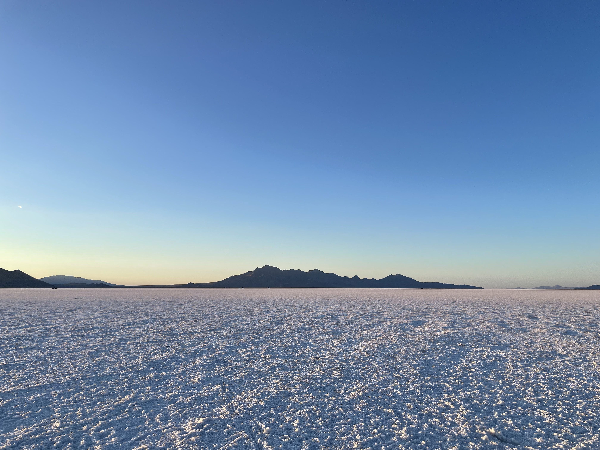
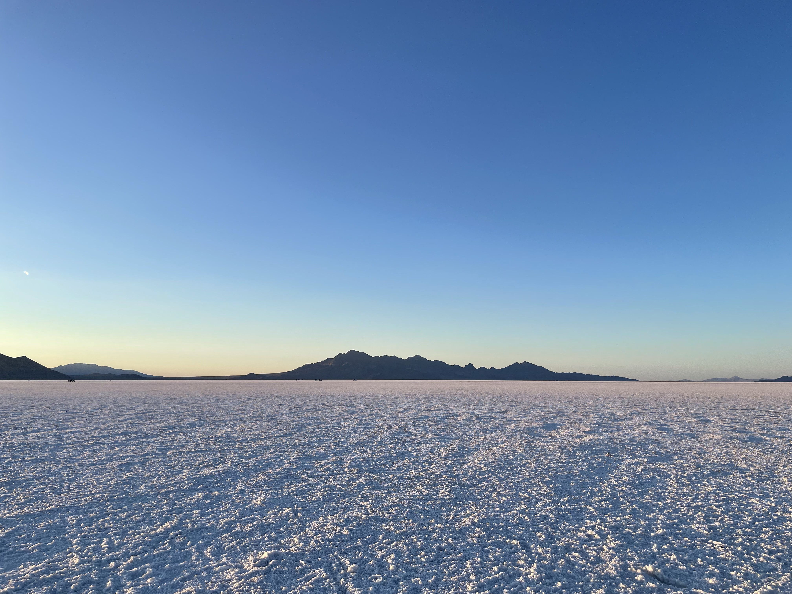
 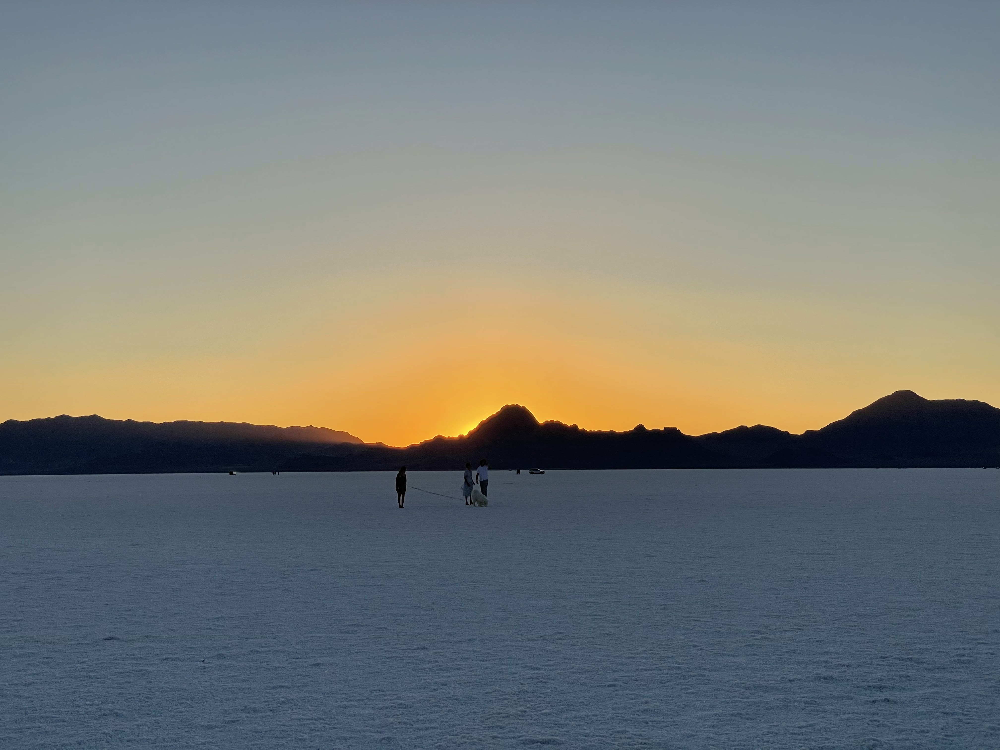
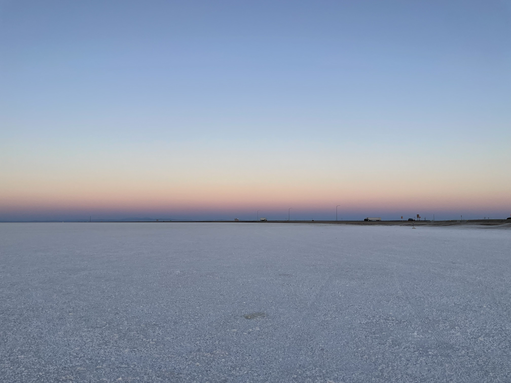
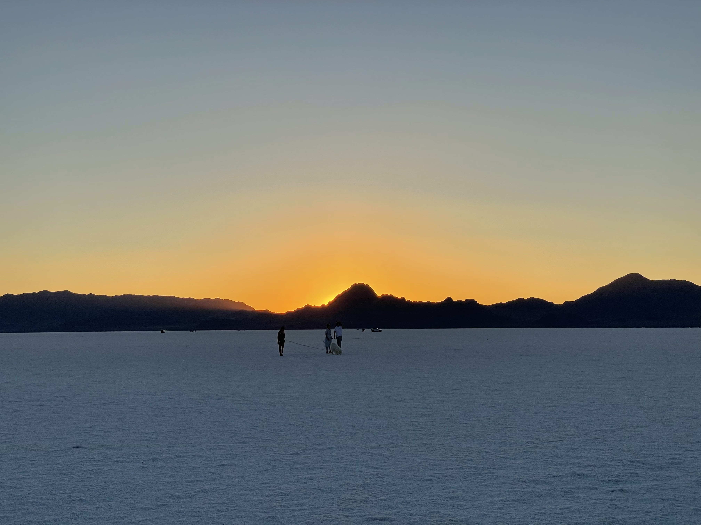
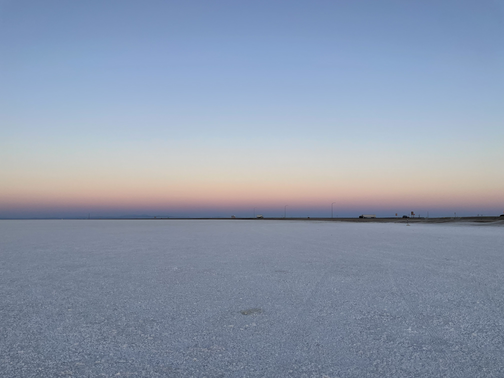
 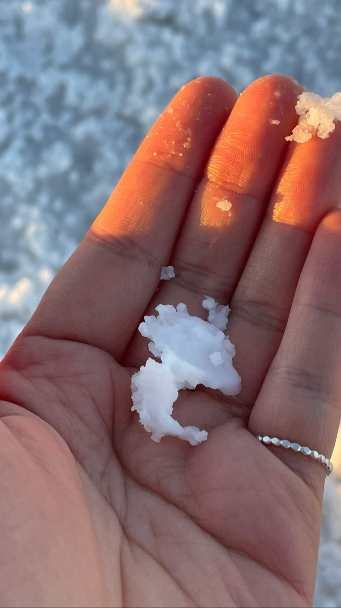
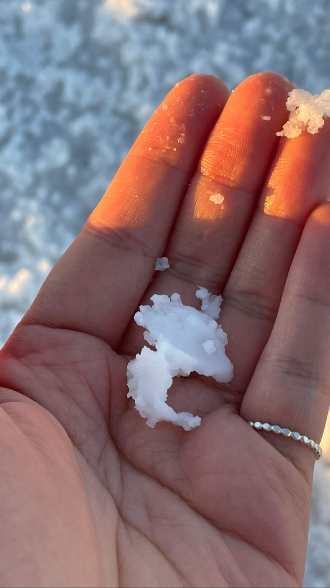
Dead Horse Point
An immense desert landscape of canyons, high desert woodland, and miles of trails invite visitors to explore Dead Horse Point State Park. The park has wonderful campgrounds with modern amenities, beautiful views, and connections to nature that will create long-lasting memories. Sunrises and sunsets are especially memorable, with canyon walls bathed in golden light, creating a stunning scene reminiscent of vivid watercolor paintings. Dark Skies filled with thousands of stars encourage travelers to look up and enjoy a view unparalleled while they visit the park